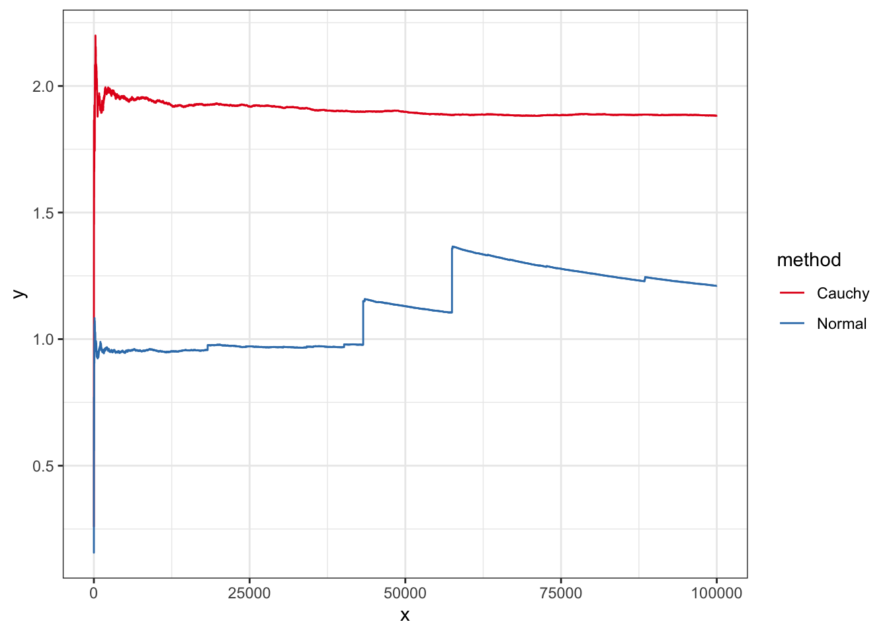

Chapter 3 積分法
Exercise 3.1 \(N\)は正の整数，\([0,1]\)上で定義された関数\(f(x)\)の補間多項式としてバーンスタイン多項式 (Bernstein polynomial) \[ g(x)=\mathbb{E}\left[f\left(\frac{X}{N}\right)\right]=\sum_{n=0}^Nf\left(\frac{n}{N}\right)x^n(1-x)^{N-n} \] を考える．ただし\(X\sim \mathcal{B}(N,x)\). このとき， \[ J=\int_0^1 g(x)\mathrm{d}x \] を求めよ． なお，大数の法則から，\(f(x)\)が連続なら，\(g(x)\)は\(f(x)\)に一様収束することが知られている．
Solution. ベータ関数の定義より \[ \int_0^1 x^n(1-x)^{N-n}\mathrm{d}x=B(n+1, N-n+1) \] となる．また， \[\begin{align*} B(n+1, N-n+1)&=\frac{\Gamma(n+1)\Gamma(N-n+1)}{\Gamma(N+2)}\\ &=\frac{n!(N-n)!}{(N+1)!} \end{align*}\] であるから， \[\begin{align*} \binom{N}{n}B(n+1, N-n+1)=\frac{1}{N+1}. \end{align*}\] よって \[ \int_0^1g(x)\mathrm{d}x=\frac{1}{N+1}\sum_{n=1}^Ng\left(\frac{n}{N}\right). \]
Exercise 3.2 \(N=3\)とし，\(a=x_0<x_1<x_2=b\)を等間隔，すなわち\(x_1=(a+b)/2\)とした場合のルジャンドル多項式\(l_1, l_2, l_3\)にたいし \[ w_i=\int_a^b l_i(x)\mathrm{d}x\ (i=1,2,3) \] を求めよ．
Solution. 定義から， \[\begin{align*} l_1(x)&=\frac{\left(x-\frac{a+b}{2}\right)(x-b)}{\left(a-\frac{a+b}{2}\right)(a-b)} =2\frac{\left(x-\frac{a+b}{2}\right)(x-b)}{(a-b)^2}, \\ l_2(x)&=\frac{(x-a)(x-b)}{\left(\frac{a+b}{2}-a\right)\left(\frac{a+b}{2}-b\right)} =-4\frac{(x-a)(x-b)}{(a-b)^2}, \\ l_3(x) &=2\frac{\left(x-\frac{a+b}{2}\right)(x-a)}{(a-b)^2} \end{align*}\] となる．したがって \[\begin{align*} w_1=\int_a^bl_1(x)\mathrm{d}x&=\int_a^b\frac{\left\{(x-a)+(x-b)\right\}(x-b)}{(a-b)^2}\\ &=\left(-\frac{1}{6}+\frac{1}{2}\right)(b-a)\\ &=\frac{1}{3}(b-a) \end{align*}\] となり，同様の計算で\(w_3=w_1=(b-a)/3\)となる．また， \[\begin{align*} w_2=\int_a^bl_2(x)\mathrm{d}x&=\frac{2}{3}(b-a). \end{align*}\]
Exercise 3.3 ニュートン・コーツの公式において，\(N=3\)とし，\(a=x_0<x_1<x_2=b\)を等間隔，すなわち\(x_1=(a+b)/2\)とした場合をという．区間\([a,b]\)上の関数\(f(x)\)に対するシンプソン公式が \[ J=\frac{b-a}{6}\left(f(a)+4f\left(\frac{a+b}{2}\right)+f(b)\right) \] で与えられることを示せ．
Solution. 前問の結果と定義からただちにに従う．
Exercise 3.4 複合台形公式を用いて(3.7)を計算せよ．
N <- 100 # No. of points -1 for trapezoidal rule
f <- function(x) (cos(50*x) + sin(20*x))^2
seq <- (0:N) / N
(sum(f(seq[-1]))+sum(f(seq[-(N+1)]))) / (2 * (N-1))## [1] 0.975289Exercise 3.5 例3.6の\(I\)の値を，R言語の組み込み関数rcauchyを用いて，基本的モンテカルロ積分法で小数点以下第二位まで正確に求めよ．
Solution. \(X_1,\ldots, X_M\)をコーシー乱数としたとき， \[ I_M=\frac{1}{M}\sum_{m=1}^M1_{\{2\le X_m\}} \] により近似できる．また，その推定量の分散は \[ \frac{1}{M-1}\sum_{m=1}^M(f(x_m)-I_M)^2 \] で近似できる．実際に計算すると
# 95% Confidence interval
CI <- function(m){
x <- (rcauchy(m)>2)
paste("estimate", mean(x), "lower_bound", mean(x)-1.96*sd(x)/sqrt(m), "upper_bound", mean(x)+1.96*sd(x)/sqrt(m))
}
CI(1e6)## [1] "estimate 0.147178 lower_bound 0.146483604441074 upper_bound 0.147872395558926"Exercise 3.6 任意の実数\(x\)にたいし，正接関数の逆関数\(\arctan x\)を，R言語の組み込み関数rcauchyを用いた基本的モンテカルロ積分法で近似する方法を構成せよ．また，その値をR言語の組み込み関数atanと比較せよ．
Solution. 例3.6の計算から， \[\begin{align*} \int_x^\infty\frac{1}{\pi(1+y^2)}\mathrm{d}y &= \int_{\arctan x}^{\pi/2}\frac{1}{\pi}\mathrm{d}\theta=\frac{1}{2}-\frac{\arctan x}{\pi} \end{align*}\] である．よって \[ \arctan x= \pi\left\{\frac{1}{2}-\int_x^\infty\frac{1}{\pi(1+y^2)}\mathrm{d}y\right\}. \] 上の式に含まれる積分計算をモンテカルロ法で近似して図示しよう．
N <- 1e2 # No. of samples
k <- 1e2 # Points for plot
x <- rcauchy(N) # Random number
f <- ecdf(x)
points <- seq(-2, 2, length = k)
data.fr <- data.frame(x=points, y=pi*(f(points)-0.5))
ggplot(data.fr, aes(x=x,y=y,color="MC"))+geom_step(aes(color="direct"))+stat_function(fun=atan)+theme_bw()+scale_color_brewer(palette = "Set1")Exercise 3.7 例3.6の計算でわかるように，\(I\)は
\[
f(x)=\left\{\begin{array}{ll}
1& \mathrm{if}\ x\ge \arctan 2\\
0& \mathrm{if}\ x<\arctan 2
\end{array}\right.
\]
および\(p(x)\)を区間\([-\pi/2, \pi/2]\)の一様分布\(\mathcal{U}[-\pi/2,\pi/2]\)の確率密度関数として
\[
I=\int_{-\pi/2}^{\pi/2} f(x)p(x)\mathrm{d}x
\]
とも表現できる．この表現を利用してR言語の組み込み関数runifを用いた基本的モンテカルロ積分法を構成せよ．また，その誤差をrcauchyを用いた方法と理論的におよび数値的に比較せよ．正接関数の逆関数\(\arctan x\)の導出はR言語の組み込み関数atanを用いよ．
Solution. 誤差評価のため，分散を比較しよう．例3.6のように\(f(x)\)をとる．期待値の真の値は\(I=0.5-(\arctan 2)/\pi\)である．このとき，例3.6のrcauchyを用いた基本的モンテカルロ積分法での分散をまず計算する．確率変数\(X\)が\(\mathcal{C}(0,1)\)に従うとして，定理3.4における\(\sigma^2\)は
\[\sigma^2=\operatorname{Var}[f(X)]=\mathbb{E}[f(X)^2]-\mathbb{E}[f(X)]^2=I-I^2\]
となる．一方，runifを用いた方法では，練習問題3.7のように\(f(x)\)を取ると，確率変数\(X\)が\(\mathcal{U}[-\pi/2,\pi/2]\)に従うとして
やはりおなじように
\[\sigma^2=\operatorname{Var}[f(X)]=\mathbb{E}[f(X)^2]-\mathbb{E}[f(X)]^2=I-I^2\]
となる．じつは２つの方法はまったくおなじ手法である．例2.2より\(U\sim\mathcal{U}[-\pi/2,\pi/2]\)に従うなら
\(\tan U\)はコーシー分布に従うからだ．
M <- 1e2
N <- 1e2
true <- 0.5 - atan( 2 )/pi
## runif method
set.seed(1234)
v <- numeric(N)
for(i in 1:N){
u <- runif(M, -pi/2, pi/2)
v[i] <- mean((u > atan(2)))
}
mean((v-true)^2)## [1] 0.0009072253## rcauchy method
set.seed(1234)
v <- numeric(N)
for(i in 1:N){
u <- runif(M, -pi/2, pi/2)
x <- tan(u)
v[i] <- mean((x > 2))
}
mean((v-true)^2)## [1] 0.0009072253Exercise 3.8 長さ\(N\)の観測\(x_1,\ldots, x_N\mid \theta\)は独立でコーシー分布\(\mathcal{C}(\theta,1)\)に従い，\(\theta\)には\(\mathcal{C}(0,1)\)が事前分布として仮定されているとする．このとき事後平均を，R言語の組み込み関数rcauchyによる自己正規化モンテカルロ法で計算せよ．
M <- 1e4
N <- 10
theta <- 2.0
x <- theta + rcauchy(N)
p1 <- Vectorize(function(theta) prod(dcauchy(x-theta))*theta)
p2 <- Vectorize(function(theta) prod(dcauchy(x-theta)))
theta <- rcauchy(M)
vec <- p1(theta)/p2(theta)
data.fr <- data.frame(x=1:M, y = (cumsum(vec)/1:M))
ggplot(data.fr, aes(x=x, y=y))+geom_line()+theme_bw()Exercise 3.9 積分 \[ I=\int_{-\infty}^\infty \exp\left(-\sqrt{|x|}\right)(\sin x)^2\mathrm{d}x \] を重点サンプリング法で計算する．コーシー分布\(\mathcal{C}(0,1)\)を提案分布とする方法と，標準正規分布\(\mathcal{N}(0,1)\)を提案分布とする方法を数値的に比較し，結果を考察せよ．
Solution. 以下で数値実験を見れば，正規分布の方法が不安定なのがわかるだろう．なぜだろか．じつは，例3.10と同じように，正規分布を使った方法では分散が発散してしまう．計算はやや煩雑であるが，\(M=1\)としたときの推定量の分散は, \(f(x)=\exp\left(-\sqrt{|x|}\right)(\sin x)^2\), \(q(x)=\exp(-x^2/2)/\sqrt{2\pi}\)として， \[\int_{-\infty}^\infty\left(\frac{f(x)}{q(x)}\right)^2q(x)\mathrm{d}x-I^2=\sqrt{2\pi}\int_{-\infty}^\infty\exp(x^2/2-x)\sin(x)^4\mathrm{d}x-I^2\] となる．正弦関数は\(0\)になることもあるのでわかりにくいが，右辺の積分は\(+\infty\)となる．積分の不等式評価は本書の範囲を超えるから，数値的に大きさを確認できれば良い．
しっかりとしめすには，まず \[ J_k:=\int_{k\pi}^{(k+1)\pi}\sin(x)^4\mathrm{d}x \] が正であり，\(k\)に依存しないことに注意する．そして， \(x\ge 2\)のとき\(x^2/2-x\ge 0\)だから， \[\begin{align*} \int_{-\infty}^\infty\exp(x^2/2-x)\sin(x)^4\mathrm{d}x&= 2\int_0^\infty\exp(x^2/2-x)\sin(x)^4\mathrm{d}x\\ &\ge 2\int_\pi^\infty\sin(x)^4\mathrm{d}x \end{align*}\] を示す．すると最後の式が\(2(J_1+J_2+\cdots)\)と表されることと先程の注意から，この積分が\(+\infty\)であることがわかる．
set.seed(1234)
M <- 1e5
f <- Vectorize(function(x) exp(-sqrt(abs(x))) * sin(x)^2)
x <- rcauchy(M)
y1 <- f(x)/dcauchy(x) # Cauchy distribution
x <- rnorm(M)
y2 <- f(x)/dnorm(x) # Normal distribution
data.fr <- data.frame(x=rep(1:M,2), y = c(cumsum(y1)/1:M,cumsum(y2)/1:M ), method = rep(c("Cauchy", "Normal"), each=M))
ggplot(data.fr, aes(x=x, y=y, color=method))+geom_line()+theme_bw() +scale_color_brewer(palette = "Set1")